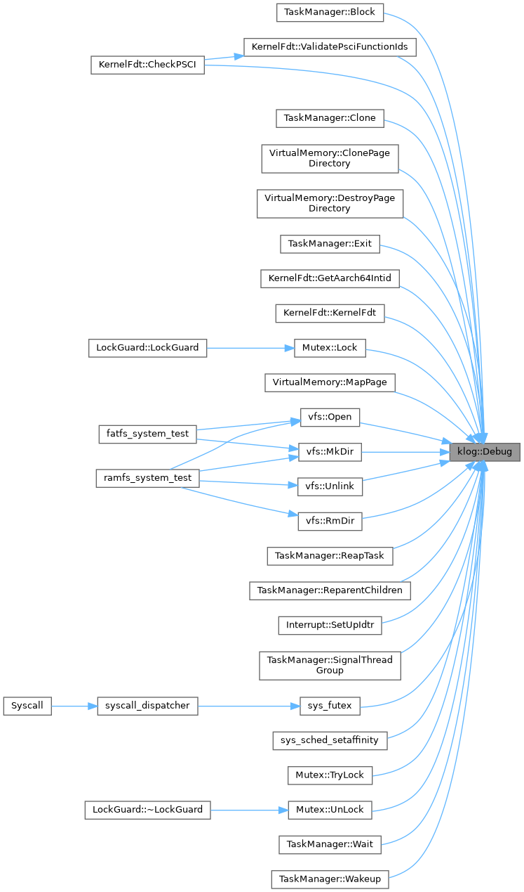
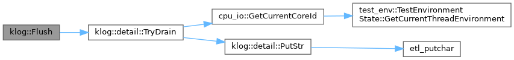
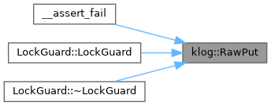
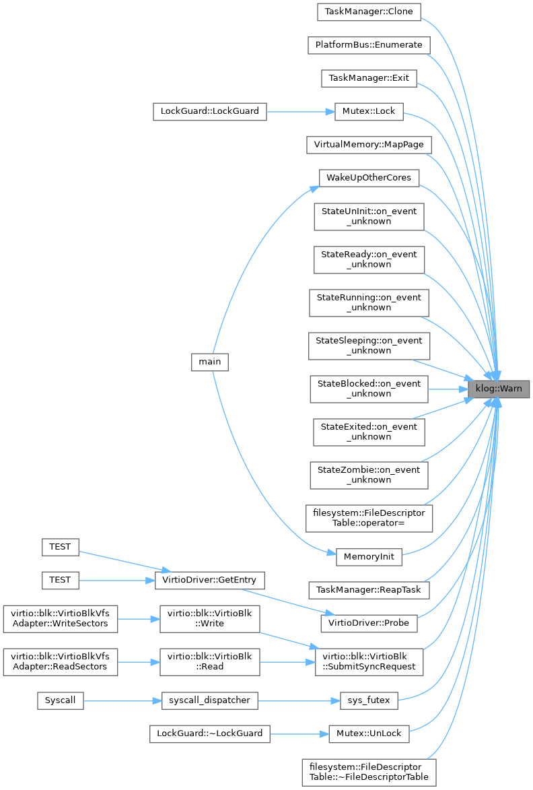

Loading...
Searching...
No Matches
klog Namespace Reference
Namespaces | |
| namespace | detail |
Functions | |
| template<typename... Args> | |
| auto | Debug (etl::format_string< Args... > fmt, Args &&... args) -> void |
| 以 DEBUG 级别记录日志（SIMPLEKERNEL_MIN_LOG_LEVEL > 0 时编译期消除） | |
| template<typename... Args> | |
| auto | Info (etl::format_string< Args... > fmt, Args &&... args) -> void |
| 以 INFO 级别记录日志 | |
| template<typename... Args> | |
| auto | Warn (etl::format_string< Args... > fmt, Args &&... args) -> void |
| 以 WARN 级别记录日志 | |
| template<typename... Args> | |
| auto | Err (etl::format_string< Args... > fmt, Args &&... args) -> void |
| 以 ERROR 级别记录日志 | |
| __always_inline auto | Flush () -> void |
| 强制将队列中所有日志条目输出至串口 | |
| __always_inline auto | RawPut (const char *msg) -> void |
| 绕过队列直接输出至串口（用于 panic 路径） | |
Detailed Description
- Copyright
- Copyright The SimpleKernel Contributors
Function Documentation
◆ Debug()
template<typename... Args>
|
inline |
以 DEBUG 级别记录日志（SIMPLEKERNEL_MIN_LOG_LEVEL > 0 时编译期消除）
Definition at line 173 of file kernel_log.hpp.
173 {
174 if constexpr (detail::Level::kDebug < detail::kMinLevel) {
175 return;
176 }
177 detail::Log<detail::Level::kDebug>(fmt, static_cast<Args&&>(args)...);
178}
Here is the caller graph for this function:

◆ Err()
template<typename... Args>
|
inline |
以 ERROR 级别记录日志
Definition at line 200 of file kernel_log.hpp.
200 {
201 if constexpr (detail::Level::kErr < detail::kMinLevel) {
202 return;
203 }
204 detail::Log<detail::Level::kErr>(fmt, static_cast<Args&&>(args)...);
205}
◆ Flush()
| __always_inline auto klog::Flush | ( | ) | -> void |
强制将队列中所有日志条目输出至串口
Definition at line 208 of file kernel_log.hpp.
208{ detail::TryDrain(); }
Here is the call graph for this function:

◆ Info()
template<typename... Args>
|
inline |
以 INFO 级别记录日志
Definition at line 182 of file kernel_log.hpp.
182 {
183 if constexpr (detail::Level::kInfo < detail::kMinLevel) {
184 return;
185 }
186 detail::Log<detail::Level::kInfo>(fmt, static_cast<Args&&>(args)...);
187}
◆ RawPut()
| __always_inline auto klog::RawPut | ( | const char * | msg | ) | -> void |
绕过队列直接输出至串口（用于 panic 路径）
Definition at line 211 of file kernel_log.hpp.
211{ detail::PutStr(msg); }
Here is the call graph for this function:

Here is the caller graph for this function:

◆ Warn()
template<typename... Args>
|
inline |
以 WARN 级别记录日志
Definition at line 191 of file kernel_log.hpp.
191 {
192 if constexpr (detail::Level::kWarn < detail::kMinLevel) {
193 return;
194 }
195 detail::Log<detail::Level::kWarn>(fmt, static_cast<Args&&>(args)...);
196}
Here is the caller graph for this function:
